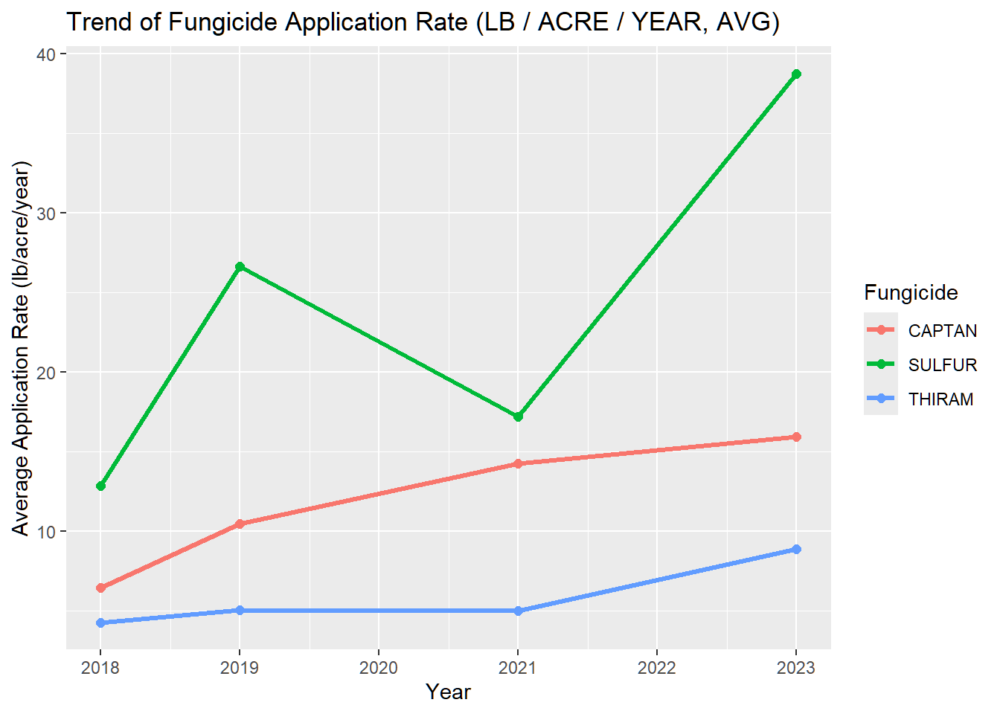
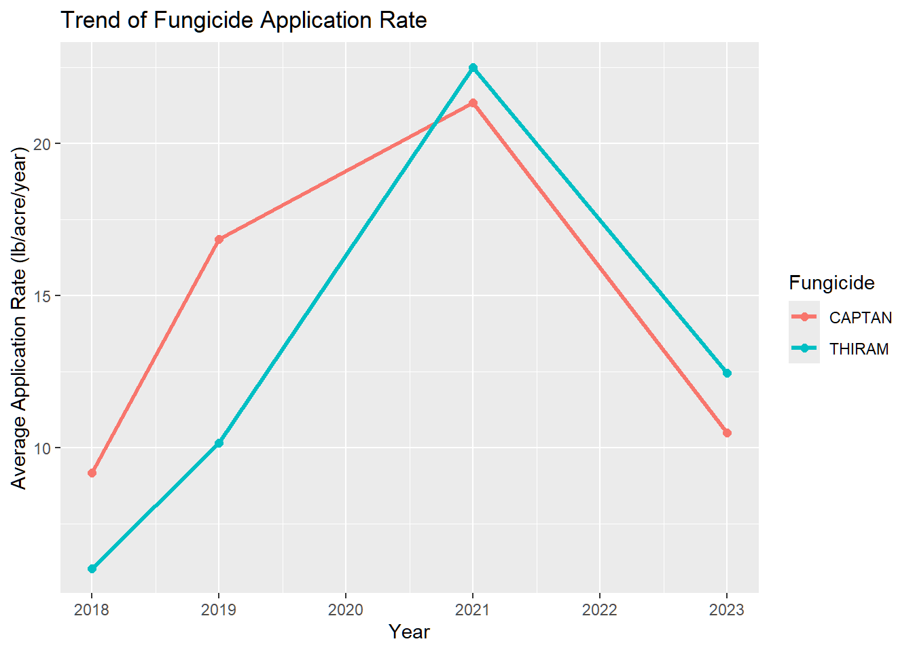
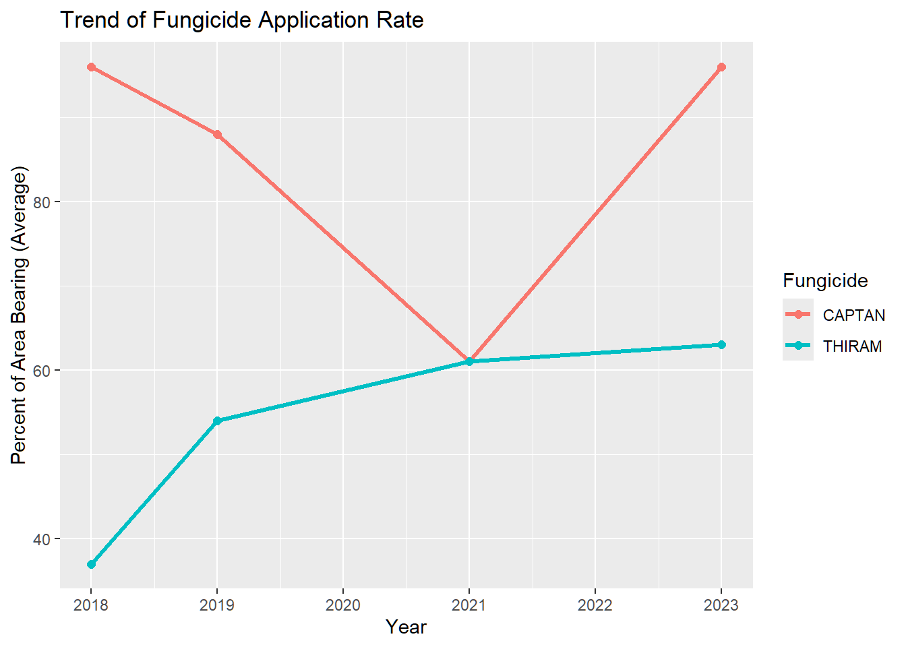

Rows: 758
Columns: 21
$ Program <chr> "SURVEY", "SURVEY", "SURVEY", "SURVEY", "SURVEY", "SU…
$ Year <int> 2023, 2023, 2023, 2023, 2023, 2023, 2023, 2023, 2023,…
$ Period <chr> "YEAR", "YEAR", "YEAR", "YEAR", "YEAR", "YEAR", "YEAR…
$ Week.Ending <lgl> NA, NA, NA, NA, NA, NA, NA, NA, NA, NA, NA, NA, NA, N…
$ Geo.Level <chr> "STATE", "STATE", "STATE", "STATE", "STATE", "STATE",…
$ State <chr> "CALIFORNIA", "CALIFORNIA", "CALIFORNIA", "CALIFORNIA…
$ State.ANSI <int> 6, 6, 6, 6, 6, 6, 6, 6, 6, 6, 6, 6, 6, 6, 6, 6, 6, 6,…
$ Ag.District <lgl> NA, NA, NA, NA, NA, NA, NA, NA, NA, NA, NA, NA, NA, N…
$ Ag.District.Code <lgl> NA, NA, NA, NA, NA, NA, NA, NA, NA, NA, NA, NA, NA, N…
$ County <lgl> NA, NA, NA, NA, NA, NA, NA, NA, NA, NA, NA, NA, NA, N…
$ County.ANSI <lgl> NA, NA, NA, NA, NA, NA, NA, NA, NA, NA, NA, NA, NA, N…
$ Zip.Code <lgl> NA, NA, NA, NA, NA, NA, NA, NA, NA, NA, NA, NA, NA, N…
$ Region <lgl> NA, NA, NA, NA, NA, NA, NA, NA, NA, NA, NA, NA, NA, N…
$ watershed_code <int> 0, 0, 0, 0, 0, 0, 0, 0, 0, 0, 0, 0, 0, 0, 0, 0, 0, 0,…
$ Watershed <lgl> NA, NA, NA, NA, NA, NA, NA, NA, NA, NA, NA, NA, NA, N…
$ Commodity <chr> "STRAWBERRIES", "STRAWBERRIES", "STRAWBERRIES", "STRA…
$ Data.Item <chr> "STRAWBERRIES - APPLICATIONS, MEASURED IN LB / ACRE /…
$ Domain <chr> "CHEMICAL, FUNGICIDE", "CHEMICAL, FUNGICIDE", "CHEMIC…
$ Domain.Category <chr> "CHEMICAL, FUNGICIDE: (OXATHIAPIPROLIN = 128111)", "C…
$ Value <chr> " (D)", " (D)", " (D)", "0.326", " (NA)", " (NA)", " …
$ CV.... <lgl> NA, NA, NA, NA, NA, NA, NA, NA, NA, NA, NA, NA, NA, N…Strawberry Fungicide Analysis
#First, take a look at the data from NASS
#After scan the dataset, we noticed there are a lot of empty cols, so we decide to clean up these cols.
[1] "col dropped:"
[1] "Program" "Period" "Week.Ending" "Geo.Level"
[5] "Ag.District" "Ag.District.Code" "County" "County.ANSI"
[9] "Zip.Code" "Region" "watershed_code" "Watershed"
[13] "Commodity" "Domain" "CV...." #Then, check if there are other strange values
Rows: 758
Columns: 6
$ Year <int> 2023, 2023, 2023, 2023, 2023, 2023, 2023, 2023, 2023, …
$ State <chr> "CALIFORNIA", "CALIFORNIA", "CALIFORNIA", "CALIFORNIA"…
$ State.ANSI <int> 6, 6, 6, 6, 6, 6, 6, 6, 6, 6, 6, 6, 6, 6, 6, 6, 6, 6, …
$ Data.Item <chr> "STRAWBERRIES - APPLICATIONS, MEASURED IN LB / ACRE / …
$ Domain.Category <chr> "CHEMICAL, FUNGICIDE: (OXATHIAPIPROLIN = 128111)", "CH…
$ Value <chr> " (D)", " (D)", " (D)", "0.326", " (NA)", " (NA)", " (…#Some of the values are labeled as (D), which means they were withheld to avoid disclosing data for individual operations. #These entries are removed to retain only the usable and publicly available data for analysis.
#Lastly, separate Domain.category and Data.item to get a clearer data set
Year State State.ANSI Chem_Group Fungicide Code
1 2023 CALIFORNIA 6 CHEMICAL, FUNGICIDE AZOXYSTROBIN 128810
2 2023 CALIFORNIA 6 CHEMICAL, FUNGICIDE BORAX DECAHYDRATE 11102
3 2023 CALIFORNIA 6 CHEMICAL, FUNGICIDE BOSCALID 128008
4 2023 CALIFORNIA 6 CHEMICAL, FUNGICIDE CAPTAN 81301
5 2023 CALIFORNIA 6 CHEMICAL, FUNGICIDE CYPRODINIL 288202
6 2023 CALIFORNIA 6 CHEMICAL, FUNGICIDE FENHEXAMID 90209
Value Indicator Measurement Crop_Status
1 0.326 APPLICATIONS LB / ACRE / YEAR, AVG BEARING
2 0.093 APPLICATIONS LB / ACRE / YEAR, AVG BEARING
3 0.885 APPLICATIONS LB / ACRE / YEAR, AVG BEARING
4 15.932 APPLICATIONS LB / ACRE / YEAR, AVG BEARING
5 0.872 APPLICATIONS LB / ACRE / YEAR, AVG BEARING
6 0.753 APPLICATIONS LB / ACRE / YEAR, AVG BEARING#The data set now is perfectly cleaned and time for some analysis
##Some EDAs
#We want to find the most popular fungicide for both states, let’s focus on 2023 data
Fungicide Comparison by Measurement Type(2023)

This bar chart compares the average fungicide application rate (in pounds per acre per year) across different active ingredients in California and Florida.
Sulfur stands out overwhelmingly, with an average rate near 40 lb/acre/year in California — far higher than any other fungicide.
Captan and Thiram follow, both above 10 lb/acre/year, and are used in both states.
All other fungicides (e.g., Boscalid, Fludioxonil, Fenhexamid) show application rates below 2 lb/acre/year, indicating much lighter use.
Florida’s bars appear shorter for most fungicides, suggesting lower per-acre application intensity compared to California.

Both states treat over 90% of the area with several fungicides, notably Captan, Fludioxonil, and Trifloxystrobin, suggesting these are key products for disease management.
Sulfur and Cyprodinil also cover more than 70% of the area in California.
A few fungicides (e.g., Boscalid, Azoxystrobin) have notably lower coverage (<30%), implying selective or limited usage.
Overall, Florida and California have similar fungicide portfolios, but Florida exhibits slightly higher treated percentages for the top few fungicides.
#Sulfur,Captan and Thiram are the top 3 fungicide used in both California and Florida
##Now we want to find out the trends of these 3 fungicides for 2018-2023
#In California

Figure X shows the temporal trend of average fungicide application rates (in lb/acre/year) for three major active ingredients — Sulfur, Captan, and Thiram — in California strawberry production from 2018 to 2023.
Sulfur consistently exhibits the highest application rate among the three, with a clear increasing trend over time. The rate rose sharply from approximately 13 lb/acre in 2018 to nearly 40 lb/acre in 2023, suggesting a growing reliance on sulfur-based products.
Captan maintained a moderate but steady upward trend, increasing from about 6 lb/acre to 15 lb/acre, reflecting stable and continued use in integrated disease management.
Thiram, while used at much lower rates overall, also shows a mild increase since 2021, likely indicating its continued but targeted role in specific disease control.
Overall, the figure indicates that while sulfur remains the dominant fungicide by application rate, captan and thiram are complementary components of California’s fungicide regimen. The sharp rise of sulfur use in 2023 may be linked to fungicide resistance management strategies or shifts in pest pressure under changing environmental conditions.

Figure X illustrates the percentage of strawberry-bearing area treated with three major fungicides — Captan, Sulfur, and Thiram — between 2018 and 2023 in California.
Sulfur maintains the highest overall treated area coverage throughout the period, fluctuating between 70–90%, indicating its broad and consistent use for disease control.
Captan shows greater year-to-year variation, dropping after 2019 but sharply increasing again by 2023 to over 90%, suggesting changes in treatment intensity or replacement cycles.
Thiram demonstrates the lowest coverage in early years but shows a steady rise after 2021, reflecting renewed or expanded use in certain disease management strategies.
In general, all three fungicides maintain high levels of treated area, showing that multi-product programs are a core feature of California’s strawberry disease management system.
#In Florida

Figure X presents the temporal trend of fungicide application rates for Captan and Thiram in Florida strawberry production from 2018 to 2023.
Both fungicides show a notable rise in usage from 2018 to 2021, with Captan increasing from about 9 lb/acre to over 21 lb/acre and Thiram from roughly 6 lb/acre to nearly 22 lb/acre. This pattern suggests intensified fungicide application in response to higher disease pressure or increased acreage during this period.
After 2021, both fungicides display a downward trend, with average rates declining by roughly 40–50% by 2023, which may indicate improved pest management efficiency, reduced disease severity, or substitution with other active ingredients.
Interestingly, the gap between Captan and Thiram narrows over time, implying greater overlap in their functional roles or alternating use as resistance management strategies.
Overall, the figure reflects a cycle of intensified use followed by decline, characteristic of adaptive chemical management practices in Florida’s strawberry production system.

Figure X shows the percentage of strawberry acreage in Florida treated with Captan and Thiram from 2018 to 2023.
Captan demonstrates a distinct U-shaped trend — starting at a very high coverage level in 2018 (about 95%), declining steadily to its lowest point in 2021 (~60%), and then sharply recovering to near full coverage again by 2023. This pattern may suggest temporary substitution with alternative fungicides during mid-years, followed by reinstatement due to effectiveness or market preference.
Thiram, in contrast, shows a steady and moderate increase throughout the same period, rising from around 35% to over 60%. The gradual rise implies expanding adoption or complementary use alongside Captan.
By 2021–2023, both fungicides converge around similar coverage levels (~60%), reflecting a potential balancing strategy to diversify disease control and delay resistance development.
Overall, Florida’s treated area trends highlight a dynamic adjustment in fungicide usage — where Captan remains dominant but Thiram’s role has steadily expanded, possibly as part of integrated pest management (IPM) efforts.